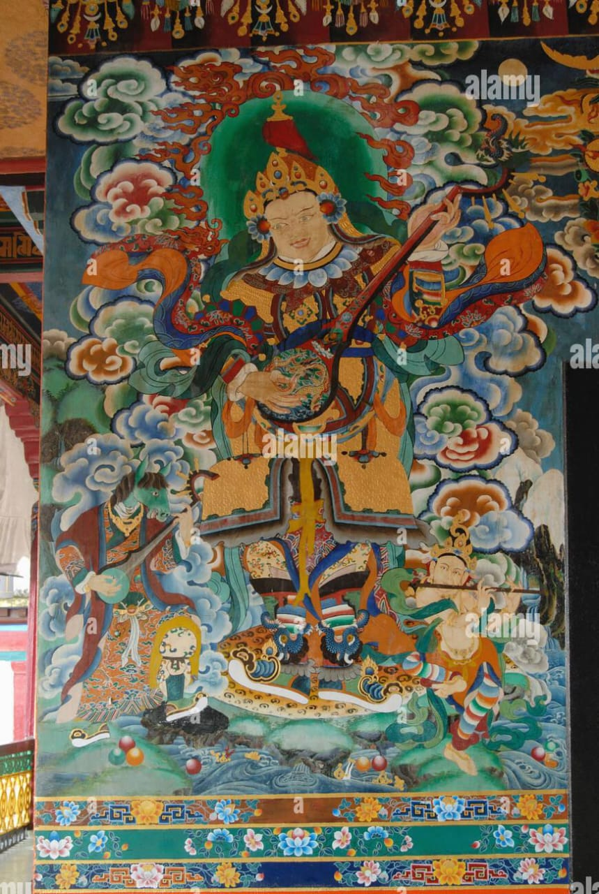

Rumtek Monastery
Located in East Sikkim, a significant center of the Kagyu school of Tibetan Buddhism.
View DetailsBrowse the complete archive of monasteries included in this research portal.

Located in East Sikkim, a significant center of the Kagyu school of Tibetan Buddhism.
View Details

Perched on a heart-shaped hill, a highly venerated site in West Sikkim.
View Details

Known for its collection of paintings and thangkas, located in South Sikkim.
View Details